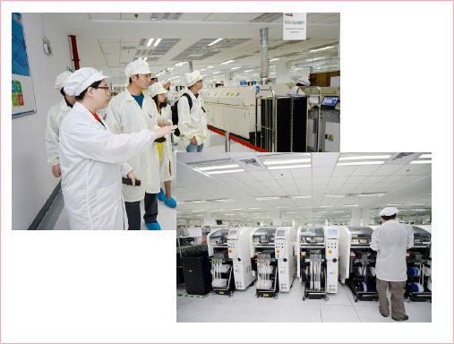
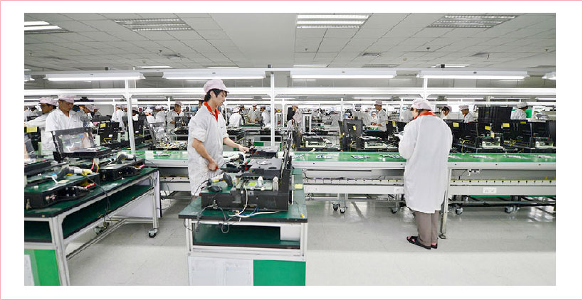

两个细节看“智造”：自动化生产、流程优化

主板打板车间的讲解员告诉媒体，这里的每条生产线平均一小时就能生产约270块笔记本电脑主板，高效背后的秘诀就是基于云的自动化生产。不论是元件装配、外观检查、功能检测，都统一由运行在内部私有云上的程序直接控制管理。即便流水线发生异常，云端也会迅速察觉并及时反馈给相关工人，只需少量人员，生产计划就可以自动高效进行。是不是科幻味十足？
在产品组装环节，传统流水线在进行定制化产品生产时，很容易因工人弄错CPU、内存等元件型号，导致产品的配置出现差错－联宝的做法很超前，用流程优化来约束生产。每一个元件都由云端分配唯一的ID标签，工人可以通过扫描标签，来随时获取云端的生产计划数据，确认匹配情况；配合可自动对比实际组装与生产计划匹配度的设备，云端也能及时对组装结果进行确认，减少人工操作失误。
“智造”的大脑：联想私有云
包括上面的两个场景在内，联宝电子内部的信息化管理其实已经覆盖了80%的场景。支撑着联宝电子ERP、PLM、MES、OA等诸多系统平台的正常运行的，正是联想提供的私有云。
- 高可用，确保生产不停工：生产线每停工1天就会有几千万损失，联宝电子对IT系统的首要考虑便是可用性。联想私有云解决方案拥有高达99.99%的可用性，平均全年停机时间不超过1小时，完全满足了联宝电子对可用性的追求。
- 虚拟化、易扩展，从容应对挑战：订单高峰期，对联宝电子的IT系统平台也是一大挑战。联想私有云的架构分为三层：计算层（联想ThinkServer）、存储层（Lenovo|EMC存储）、应用层（VMware虚拟机）。完全虚拟化、资源池化的系统架构可以实现弹性资源分配，从容应对订单高峰的挑战。而其易于横向扩展的设计，也为联宝电子未来的系统平台升级带来了便利。
- 成本降低，四两拨千斤：联想的私有云甚至还帮助了联宝电子大幅降低企业IT成本。基于虚拟化的基础架构，令联宝电子一套IT应用系统的上线从原本的60天缩短至1天；高可用、集中式的管理，也使得维护管理着这朵私有云的IT团队，其实仅有数十人，运维成本大幅降低；加之资源共享、弹性资源分配等特性，IT系统采购成本也得以控制。
